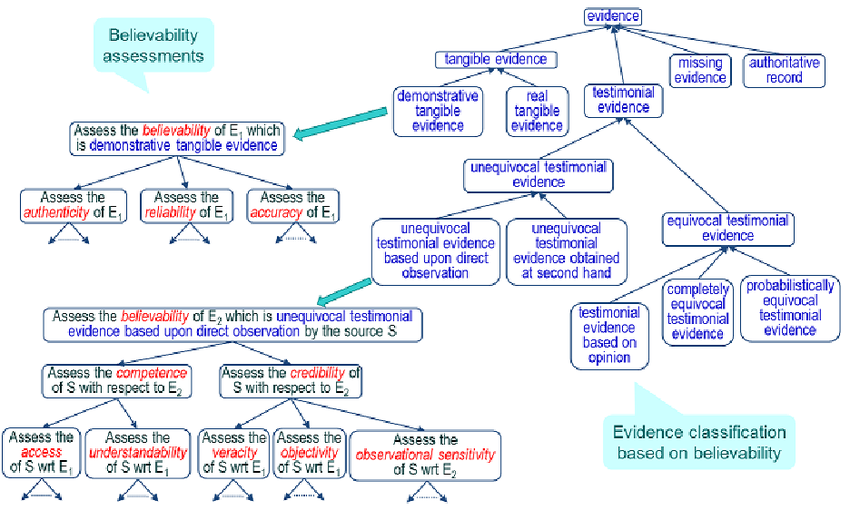

<title>Anecdotal Evidence</title>
<style>
      /* Scoped styles for Blogger dark themes. No white table backgrounds. */
      .ep-post {
        color: inherit;
        background: transparent;
        font-family:
          system-ui,
          -apple-system,
          BlinkMacSystemFont,
          "Segoe UI",
          Roboto,
          Helvetica,
          Arial,
          sans-serif;
        line-height: 1.65;
        font-size: 1rem;
        max-width: 980px;
        margin: 0 auto;
      }

      .ep-post * {
        box-sizing: border-box;
      }

      .ep-post h1,
      .ep-post h2,
      .ep-post h3,
      .ep-post h4 {
        line-height: 1.25;
        margin: 1.8em 0 0.65em;
        color: inherit;
      }

      .ep-post h1 {
        font-size: 2rem;
        border-bottom: 1px solid
          color-mix(in srgb, currentColor 24%, transparent);
        padding-bottom: 0.35em;
      }

      .ep-post h2 {
        font-size: 1.45rem;
        border-bottom: 1px solid
          color-mix(in srgb, currentColor 16%, transparent);
        padding-bottom: 0.25em;
      }

      .ep-post h3 {
        font-size: 1.15rem;
      }

      .ep-post p {
        margin: 0.75em 0;
      }

      .ep-post ul,
      .ep-post ol {
        margin: 0.65em 0 0.9em 1.35em;
        padding: 0;
      }

      .ep-post li {
        margin: 0.22em 0;
      }

      .ep-post a {
        color: inherit;
        text-decoration: underline;
        text-underline-offset: 0.16em;
      }

      .ep-post strong {
        font-weight: 700;
      }

      .ep-post code {
        background: color-mix(in srgb, currentColor 10%, transparent);
        color: inherit;
        border: 1px solid color-mix(in srgb, currentColor 16%, transparent);
        border-radius: 0.25rem;
        padding: 0.08em 0.28em;
        font-family:
          ui-monospace, SFMono-Regular, Menlo, Consolas, "Liberation Mono",
          monospace;
        font-size: 0.92em;
      }

      .ep-post pre {
        background: color-mix(in srgb, currentColor 7%, transparent);
        color: inherit;
        border: 1px solid color-mix(in srgb, currentColor 18%, transparent);
        border-radius: 0.6rem;
        padding: 1rem;
        overflow-x: auto;
      }

      .ep-post pre code {
        background: transparent;
        border: 0;
        padding: 0;
      }

      .ep-post blockquote {
        margin: 1em 0;
        padding: 0.2em 0 0.2em 1em;
        border-left: 3px solid color-mix(in srgb, currentColor 32%, transparent);
        color: color-mix(in srgb, currentColor 88%, transparent);
      }

      /* =========================================================
   Readable Blogger tables
   ========================================================= */

      .ep-post .table-wrap {
        width: 100%;
        max-width: 100%;
        overflow-x: auto;
        overflow-y: hidden;
        -webkit-overflow-scrolling: touch;
        margin: 1.15em 0;
        border: 1px solid color-mix(in srgb, currentColor 16%, transparent);
        border-radius: 0.65rem;
        background: transparent !important;
      }

      .ep-post table {
        width: 100%;
        border-collapse: collapse;
        table-layout: fixed;
        margin: 1.15em 0;
        font-size: 0.9em;
        line-height: 1.45;
        color: inherit;
        background: transparent !important;
      }

      .ep-post .table-wrap table {
        margin: 0;
      }

      /* Wider tables can scroll, but text still wraps instead of becoming giant. */
      .ep-post table.wide-table {
        min-width: 760px;
      }

      .ep-post table.extra-wide-table {
        min-width: 920px;
      }

      /* Long tables should feel more like a reference sheet. */
      .ep-post table.long-table {
        font-size: 0.86em;
      }

      .ep-post thead,
      .ep-post tbody,
      .ep-post tr,
      .ep-post th,
      .ep-post td {
        background: transparent !important;
        color: inherit;
      }

      .ep-post th,
      .ep-post td {
        border: 1px solid color-mix(in srgb, currentColor 22%, transparent);
        padding: 0.48em 0.6em;
        vertical-align: top;
        white-space: normal;
        overflow-wrap: break-word;
        word-break: normal;
        hyphens: auto;
      }

      .ep-post th {
        font-weight: 700;
        text-align: left;
        background: color-mix(in srgb, currentColor 9%, transparent) !important;
      }

      .ep-post tr:nth-child(even) td {
        background: color-mix(in srgb, currentColor 4%, transparent) !important;
      }

      /* First columns are usually labels/terms. Keep them compact but readable. */
      .ep-post table:not(.extra-wide-table) th:first-child,
      .ep-post table:not(.extra-wide-table) td:first-child {
        width: 22%;
      }

      /* Two-column explanatory tables: give the explanation more room. */
      .ep-post table.two-col th:first-child,
      .ep-post table.two-col td:first-child {
        width: 28%;
      }

      .ep-post table.two-col th:nth-child(2),
      .ep-post table.two-col td:nth-child(2) {
        width: 72%;
      }

      /* Three-column reference tables. */
      .ep-post table.three-col th:first-child,
      .ep-post table.three-col td:first-child {
        width: 22%;
      }

      .ep-post table.three-col th:nth-child(2),
      .ep-post table.three-col td:nth-child(2) {
        width: 43%;
      }

      .ep-post table.three-col th:nth-child(3),
      .ep-post table.three-col td:nth-child(3) {
        width: 35%;
      }

      /* Keep short utility columns compact when manually applied. */
      .ep-post th.short,
      .ep-post td.short,
      .ep-post th.date,
      .ep-post td.date,
      .ep-post th.number,
      .ep-post td.number {
        width: 1%;
        white-space: nowrap;
      }

      /* Use on text-heavy columns when editing by hand later. */
      .ep-post th.long,
      .ep-post td.long,
      .ep-post th.description,
      .ep-post td.description,
      .ep-post th.notes,
      .ep-post td.notes {
        min-width: 14rem;
        line-height: 1.5;
        white-space: normal;
        overflow-wrap: break-word;
      }

      /* Dense option for especially long tables. */
      .ep-post table.dense th,
      .ep-post table.dense td {
        padding: 0.38em 0.5em;
        font-size: 0.96em;
        line-height: 1.42;
      }

      /* Math support */
      .ep-post .mjx-container {
        overflow-x: auto;
        overflow-y: hidden;
        max-width: 100%;
      }

      .ep-post .math-block {
        margin: 1em 0;
        overflow-x: auto;
      }

      @supports not (color: color-mix(in srgb, white 50%, black)) {
        .ep-post h1,
        .ep-post h2 {
          border-bottom-color: rgba(128, 128, 128, 0.35);
        }

        .ep-post th,
        .ep-post td {
          border-color: rgba(128, 128, 128, 0.35);
        }

        .ep-post th {
          background: rgba(128, 128, 128, 0.12) !important;
        }

        .ep-post tr:nth-child(even) td {
          background: rgba(128, 128, 128, 0.06) !important;
        }

        .ep-post code,
        .ep-post pre {
          background: rgba(128, 128, 128, 0.12);
          border-color: rgba(128, 128, 128, 0.25);
        }

        .ep-post .table-wrap {
          border-color: rgba(128, 128, 128, 0.25);
        }
      }

      /* Mobile: convert tables into readable cards instead of squeezed grids. */
      @media (max-width: 720px) {
        .ep-post {
          font-size: 0.98rem;
        }

        .ep-post h1 {
          font-size: 1.65rem;
        }

        .ep-post h2 {
          font-size: 1.28rem;
        }

        .ep-post .table-wrap {
          overflow-x: visible;
          border: 0;
          border-radius: 0;
          margin: 1.1em 0;
        }

        .ep-post table,
        .ep-post table.wide-table,
        .ep-post table.extra-wide-table,
        .ep-post table.long-table {
          display: block;
          width: 100%;
          min-width: 0;
          max-width: 100%;
          font-size: 0.92em;
          border: 0;
        }

        .ep-post thead {
          display: none;
        }

        .ep-post tbody,
        .ep-post tr,
        .ep-post td {
          display: block;
          width: 100% !important;
        }

        .ep-post tr {
          margin: 0 0 0.9em;
          border: 1px solid color-mix(in srgb, currentColor 20%, transparent);
          border-radius: 0.65rem;
          overflow: hidden;
          background: color-mix(
            in srgb,
            currentColor 3%,
            transparent
          ) !important;
        }

        .ep-post td {
          border: 0;
          border-bottom: 1px solid
            color-mix(in srgb, currentColor 14%, transparent);
          padding: 0.55em 0.7em;
          line-height: 1.5;
        }

        .ep-post td:last-child {
          border-bottom: 0;
        }

        .ep-post td::before {
          content: attr(data-label);
          display: block;
          margin-bottom: 0.18em;
          font-size: 0.78em;
          line-height: 1.25;
          font-weight: 700;
          letter-spacing: 0.02em;
          text-transform: uppercase;
          color: color-mix(in srgb, currentColor 72%, transparent);
        }
      }
    

      /* Phase 2 structural hierarchy */
      .ep-post .ep-part-banner {
        margin: 3.2em 0 1.1em;
        padding: 0.9em 1em;
        border-top: 2px solid color-mix(in srgb, currentColor 34%, transparent);
        border-bottom: 1px solid color-mix(in srgb, currentColor 18%, transparent);
        background: color-mix(in srgb, currentColor 4%, transparent);
      }
      .ep-post .ep-part-banner .ep-part-kicker {
        display: block;
        font-size: 0.78em;
        font-weight: 700;
        letter-spacing: 0.08em;
        text-transform: uppercase;
        opacity: 0.72;
        margin-bottom: 0.18em;
      }
      .ep-post .ep-part-banner .ep-part-title {
        display: block;
        margin: 0.08em 0 0.24em;
        padding: 0;
        border: 0;
        font-size: 1.72rem;
        line-height: 1.2;
        font-weight: 750;
      }
      .ep-post h2.ep-source-section {
        margin-top: 2.2em;
        padding-top: 0.35em;
        border-top: 1px solid color-mix(in srgb, currentColor 14%, transparent);
      }
      .ep-post .ep-toc {
        margin: 0.8em 0 2.2em;
      }
      .ep-post .ep-toc-part {
        margin: 1.15em 0;
      }
      .ep-post .ep-toc-part > p {
        margin-bottom: 0.25em;
        font-weight: 700;
      }
      .ep-post .ep-toc-part ul ul {
        margin-top: 0.25em;
        margin-bottom: 0.4em;
      }


      /* =========================================================
         Phase 4: editorial presentation system
         ========================================================= */
      .ep-post .chapter-lead {
        font-size: 1.04em;
        line-height: 1.68;
        margin: 0.9em 0 1.2em;
      }

      .ep-post .concept-callout,
      .ep-post .formula-callout,
      .ep-post .core-claim {
        margin: 1.05em 0;
        padding: 0.78em 0.95em;
        border-left: 4px solid color-mix(in srgb, currentColor 34%, transparent);
        background: color-mix(in srgb, currentColor 5%, transparent);
        border-radius: 0.35rem;
      }

      .ep-post .formula-callout {
        text-align: center;
        font-weight: 650;
        letter-spacing: 0.01em;
      }

      .ep-post ul.compact-grid,
      .ep-post ul.question-grid {
        list-style-position: outside;
        display: grid;
        grid-template-columns: repeat(2, minmax(0, 1fr));
        gap: 0.28em 1.6em;
        margin: 0.8em 0 1.05em 1.25em;
      }

      .ep-post ul.compact-grid li,
      .ep-post ul.question-grid li {
        break-inside: avoid;
        padding-right: 0.4em;
      }

      .ep-post .checkpoint-block,
      .ep-post .learning-insight-block {
        margin: 1.6em 0;
        padding: 0.35em 1em 0.85em;
        border: 1px solid color-mix(in srgb, currentColor 18%, transparent);
        border-radius: 0.7rem;
        background: color-mix(in srgb, currentColor 3%, transparent);
      }

      .ep-post .checkpoint-block > h2,
      .ep-post .checkpoint-block > h3,
      .ep-post .learning-insight-block > h3 {
        margin-top: 0.65em;
      }

      .ep-post table.comparison-table th:first-child,
      .ep-post table.comparison-table td:first-child {
        width: 32%;
      }

      .ep-post table.worksheet-table th:first-child,
      .ep-post table.worksheet-table td:first-child {
        width: 24%;
      }

      .ep-post table.glossary-table th:first-child,
      .ep-post table.glossary-table td:first-child {
        width: 18%;
      }

      .ep-post table.lens-table th:first-child,
      .ep-post table.lens-table td:first-child {
        width: 24%;
      }

      @media (max-width: 720px) {
        .ep-post ul.compact-grid,
        .ep-post ul.question-grid {
          grid-template-columns: 1fr;
          gap: 0.2em;
        }

        .ep-post .concept-callout,
        .ep-post .formula-callout,
        .ep-post .core-claim {
          padding: 0.7em 0.8em;
        }
      }


      /* =========================================================
         Phase 6: section-level coherence and navigation
         ========================================================= */
      .ep-post .chapter-guide {
        margin: 0.8em 0 1.25em;
        padding: 0.72em 0.9em;
        border: 1px solid color-mix(in srgb, currentColor 16%, transparent);
        border-radius: 0.55rem;
        background: color-mix(in srgb, currentColor 2.5%, transparent);
      }
      .ep-post .chapter-guide p {
        margin: 0.18em 0;
      }
      .ep-post .chapter-guide .chapter-path {
        font-size: 0.94em;
        opacity: 0.88;
      }
      .ep-post .chapter-transition {
        margin: 1.45em 0 0.4em;
        padding-top: 0.85em;
        border-top: 1px solid color-mix(in srgb, currentColor 16%, transparent);
        font-style: italic;
      }
      .ep-post .ep-part-banner .ep-part-summary {
        display: block;
        margin-top: 0.42em;
        max-width: 72rem;
        font-size: 0.92em;
        line-height: 1.5;
        font-weight: 400;
        opacity: 0.82;
      }

      .ep-post header.ep-part-banner {
        clear: both;
        position: relative;
      }
      .ep-post .checkpoint-block + header.ep-part-banner {
        margin-top: 3.8em;
      }
</style>
<script>
      window.MathJax = {
        tex: {
          inlineMath: [
            ["\\(", "\\)"],
            ["$", "$"],
          ],
          displayMath: [
            ["\\[", "\\]"],
            ["$$", "$$"],
          ],
          processEscapes: true,
        },
        options: {
          skipHtmlTags: [
            "script",
            "noscript",
            "style",
            "textarea",
            "pre",
            "code",
          ],
        },
      };
    </script>
<script async="" src="https://cdn.jsdelivr.net/npm/mathjax@3/es5/tex-chtml.js"></script>
<article class="ep-post">
<p>
  &nbsp;Very often we want to make claims about something. These claims might be
  explanations, interpretations, predictions, recommendations, strategies for
  action, propositions about states of affairs, judgements, assessments, and
  many more. Normally, we want to persuade or convince someone of the truth of
  our claims to invoke action. If your objective is to move someone to action,
  you might need to engage in means-end reasoning to get them to reconstruct
  their current
  <a href="https://en.wikipedia.org/wiki/Goal_orientation">goal structure</a>.
  In other instances, we might want to convince someone of our position to gain
  alignment on a specific problem, without invoking action. Or we might
  investigate claims simply out of our intellectual curiosity to reduce
  uncertainty or gain understanding of a concept. All of this will eventually
  lead us to engage with someone else (written or verbal) in a discussion,
  dialogue, or argument. There are times during disagreement when the people you
  encounter might resort to coercion, manipulation, and
  <a href="https://en.wikipedia.org/wiki/Category:Deception">deception</a> in
  order to invoke action or confer notions of truth. Sometimes they might
  <a href="https://en.wikipedia.org/wiki/Proof_by_assertion"
    >prove their position by assertion</a
  >
  or resort to argumentation
  <a href="https://en.wikipedia.org/wiki/Ad_nauseam">ad nauseam</a> until their
  interlocutor concedes. The nature of
  <a href="https://plato.stanford.edu/entries/assertion/">assertion </a>is
  interesting in that, it delivers no reason to accept the position on grounds
  of the statement alone; it's simply an expression of belief, preference, or
  desire. Assertions can range from simple atomic statements of fact such as
  "The table is brown" to more complex propositions containing entire paradigms
  "When price goes up, demand goes down". Assertions of the former kind are
  inevitable for establishing common ground, assertions of the latter are done
  as a short cut in reasoning. If you or someone are trying to establish a
  claim, the question becomes; what conditions enhance its acceptability? What
  are the necessary conditions that will drive someone to action? You could
  probably resort to
  <a href="https://en.wikipedia.org/wiki/Category:Persuasion_techniques"
    >persuasion techniques</a
  >
  such as
  <a href="https://en.wikipedia.org/wiki/Category:Storytelling">story telling</a
  >,
  <a href="https://en.wikipedia.org/wiki/Category:Rhetorical_techniques"
    >rhetorical techniques</a
  >, and
  <a href="https://en.wikipedia.org/wiki/Category:Narrative_techniques"
    >narrative techniques</a
  >; these are the sorts of oratory that have moved people to action for
  millennia. They certainty can aid in enhancing the acceptability of your claim
  and have probably moved you to take action when hearing a claim leveraged by
  these techniques. Consider the genre of
  <a href="https://en.wikipedia.org/wiki/Epideictic">epideictic oratory</a>;
  speech oriented towards praise or condemnation. There are in fact, no
  arguments present in speech like this. On the contrary, it's purpose is to
  speak to an audience already convinced of the underlying propositions. It
  enhances the degree of conviction towards the proposition; moving people to
  act a certain way. The audience’s goal structure is entirely aligned with the
  speaker; who amplifies the underlying value structure of the community by
  means of speech. Now the question becomes; when does "acceptability" overlap
  with "true propositional content"? You can use all the aforementioned
  techniques to convince someone of your position and yet never demonstrate the
  validity of your position. This is one of the key demarcations between
  something such as literature and political oratory versus genuine research
  methods. While the former is concerned with convincing others of the position
  by means of appealing to common virtues (as an example), the latter convinces
  us by implementing sets of procedures that are stance independent. But
  <em
    >Claims demonstrated using research methods need not move anyone to
    action</em
  >
  in the same way that persuasive speech moves us. What are some of the
  instantiations of this method of inquiry? I want to mention a fundamental form
  of persuasion that seems convincing at surface level and contrast it with
  research methods that at face value, seem to be similar.
</p>
<p>
  Let’s think about the
  <a href="https://en.wikipedia.org/wiki/Anecdotal_evidence">anecdote</a>. You
  will constantly hear factual claims that are based on "evidence" that is
  anecdotal in nature. Someone eats 10 lemons and 5 avocados while bathing in
  essential oils; suddenly their cold disappears. This example is absurd
  (unfortunately not too unrealistic) but the logic is similar across an
  arbitrary set of similar cases; someone does something to alleviate a generic
  set of symptoms, eventually they feel better, and attribute it to their newly
  discovered method. Of course these sorts of things ignore
  <a
    href="https://en.wikipedia.org/wiki/Regression_toward_the_mean#Regression_fallacies"
    >regression to the mean</a
  >
  and principles of
  <a href="https://en.wikipedia.org/wiki/Randomized_controlled_trial"
    >randomized control trials</a
  >. I don't really want to elaborate on why structured investigation of
  cause-and-effect will always outperform anecdotal reasoning. What I want to do
  is probe into the question; why do anecdotes convince people? If we think
  about the <em>structure of the anecdote</em>, its acceptability dramatically
  changes depending on the content within it. Reconstruct the anecdote I gave
  above saying; Someone takes a multi-vitamin, sits in a sauna, and eats a piece
  of red meat. This immediately becomes more plausible despite it having the
  exact structure and lack of scientific rigor. The degree to which the anecdote
  corresponds with whatever is deemed "common sense", the more acceptable it
  will become. You can imagine that my reconstructed anecdote will not be
  convincing to a group of vegans, considering they do not share the
  presupposition that red meat is a possible cure. Let’s now restate the
  anecdote as; Someone drinks 5 cups of orange juice, detoxes, and meditates.
  This immediately becomes more plausible to a certain subset of people more
  aligned to this "common sense". This is one of the incredible drawbacks of
  even the most convincing anecdote; plausibility does not matter when it comes
  to factuality. The randomized control trial supersedes all of this because it
  is a demonstrated method that repeatedly returns reliable results contrary to
  notions of plausibility. So here is the first thing with the anecdote; it is
  incredibly unreliable in this respect. But we are at an impasse, so to speak.
  All empirical research relies on sense experience (albeit in an incredibly
  more structured and robust way) but so does anecdote, which is why people can
  get away with saying "it worked for me". How can we get passed this, so
  someone unfamiliar with
  <a href="https://en.wikipedia.org/wiki/Category:Methodology"
    >rigorous methodology</a
  >
  and
  <a href="https://en.wikipedia.org/wiki/Category:Research_methods"
    >research methods</a
  >
  can understand why "worked for me" misses the point and that anecdotes are
  fundamentally flawed?
</p>
<p>
  I think part of the problem comes from the very subtle ambiguity with the
  concept "evidence". Many people learn about the concept outside of a
  scientific context and then extrapolate their misunderstandings into what they
  presume science to be. Many people think that "proof" is something you do as
  in "winning a debate" (in which personal experience through anecdote might
  convince an audience). This is what I mentioned before, convincing someone of
  your position using a whole host of rhetorical methods.
  <a href="https://en.wikipedia.org/wiki/Category:Evidence_law">Evidence Law</a>
  obviously tries to alleviate this by setting out burden of proof, rules of
  admissibility, authentication, and procedure regarding what is considered
  "relevant" evidence within a court of law. You cannot extrapolate this to the
  scientific domain; the two are answering different questions and therefore the
  conditions of acceptability will be different. Suppose someone is tried for a
  murder; there will be many sources of evidence admitted into the court
  including physical and undoubtedly some sort of
  <a href="https://en.wikipedia.org/wiki/Category:Testimony"
    >testimonial evidence</a
  >. Someone will be brought in to testify whether an event or part of an event
  occurred; their testimony is then assessed relative to the entire "Story"
  (sequence of facts). Sometimes testimony can be pivotal in determining a case;
  sometimes it is highly suspect subject to
  <a href="https://en.wikipedia.org/wiki/Hearsay">hearsay</a>, issues with
  <a href="https://en.wikipedia.org/wiki/Eyewitness_memory"
    >eye witness memory</a
  >,
  <a href="https://en.wikipedia.org/wiki/Leading_question">leading questions</a
  >, and all of the biases we have discovered in the past century demonstrating
  the unreliability of testimony. Now contrast approach this with a
  <a href="https://en.wikipedia.org/wiki/Scientific_evidence">scientific</a>
  investigation; Does aromatherapy reduce chronic pain? The structure of the
  question is fundamentally different. In the legal case we are asking whether
  person X was the cause of person Y's death, while the scientific case is
  asking whether we can make a causal generalization that X causes Y. The
  question is not "did this event in the past happen" but "does this treatment
  bring about this hypothesized cause under such-and-such conditions" (factual
  claim vs empirical generalization). We are in an entirely different domain,
  and I don't think people really grasp that. So, the anecdotal evidence "it
  worked for me" is entirely irrelevant because this is not a court case; your
  testimony is fundamentally weak when we are unconcerned with generalization. A
  single story reflecting your perceived experience is incredibly weak when it
  comes to generalization. Research does not go about by arguing over whose
  anecdote is more persuasive; it appeals to objective methods that supersede
  narration and argumentation. It relies on
  <a href="https://en.wikipedia.org/wiki/Data_collection">data collection</a>
  and <a href="https://en.wikipedia.org/wiki/Measurement">measurement</a>,
  inferring conclusions from accepted methods, and being cautious to assert
  generalizations in the absence of replication.
</p>
<p>
  We should probably ask ourselves what even is an
  <a href="https://en.wikipedia.org/wiki/Anecdote">anecdote</a>? An anecdote is
  "a story with a point", their purpose is to communicate an idea using
  narrative. The anecdote may contain factual features, but frequently are
  subject to embellishment, narratology, ambiguity, lack of precision etc., all
  the features antithetical to scientific evidence. Think of an anecdote simply
  as a vessel that supports the transference of information. The term "anecdotal
  evidence" is somewhat of a misnomer, because anecdotes are not evidence
  according to the scientific sense of the term (and to a large extent the legal
  sense of the term). If scientific investigation seeks to understand the
  typicality of a relationship to infer cause and effect, by the very nature of
  an anecdote, it cannot achieve this because these are stories, not repeated
  measurements. Anecdotes can sometimes be used in the form of testimonials to
  entice someone into action; and might help you determine a course of action in
  informal settings. Consider a potential employee applying for a position. The
  prospective employer calls the applicants references to determine whether he
  is a "good fit". The references tell a couple of stories to demonstrate his
  qualities. The prospective employer then must decide based on this and other
  information he has access to. Thinking about this from a scientific
  perspective, "good fit" is not well defined enough to construct a measure.
  Furthermore, acquiring the data that represents "good fit" might be difficult.
  The nature of scientific inquiry is to generate data in such a way that it
  works with a statistical hypothesis test, while assessing testimony is an
  assessment of stories; in this case to determine whether you want the
  candidate to fill the position. You are determining their "worth" and
  inferring character, not their "objective qualities". Notice how employers
  never seek to verify whether the candidate performed the work they listed on
  their resume; so, it's not investigative either. The applicant signaling,
  through a variety of means, to the employer that they should get the job. In
  other words, it is a sales pitch (you are selling your labor to a potential
  buyer). This is not in the realm of "proof". We often use that term very
  loosely to gain leverage in conversations with people we disagree with.
  Advertisements also have this persuasive form. Note that I am not saying
  anecdotes are useless; they are however extremely useless when demonstrating a
  proof or statistical generalization. They simply do not fit into the form of
  scientific procedure; in fact, scientific procedures are meant to correct for
  the sorts of obvious issues that anecdotes fall prey to. To begin, scientific
  procedures correct for the inherent ambiguity, imprecisions, and vagueness of
  anecdotes by constructing measures that can be accessible to a universal
  audience. Observations are systematically recorded, rather than selectively
  presented as in the case of anecdotes. Results and procedures are documented
  in a structured way free of rhetorical devices and free from the issues with
  oral transmission. Results go through a process of peer review and replication
  to show that the results under discussion are robust to alternative model
  specifications and free of obvious error. Scientific methods seek to eliminate
  the
  <a href="https://rationalwiki.org/wiki/Anecdotal_evidence#Selection_bias"
    >selection bias</a
  >,
  <a href="https://en.wikipedia.org/wiki/Availability_heuristic"
    >availability heuristic</a
  >,
  <a href="https://en.wikipedia.org/wiki/Placebo#Effects">placebo effects</a>,
  lack of control, misrepresentations, memory issues, and generally just all of
  the ways we can be fooled by sense impression or dogmatic argument. Think of
  scientific methods as a collection of structured methods of investigation that
  improve our chances of being correct. It does this by explicitly correcting
  for obvious ways we can be wrong, such as an anecdote. I am not trying to rip
  on anecdote as being functionally useless; it’s not like I don't rely on them
  to gain inspiration, improve my skills, nudge me in a direction, decide which
  food to get at a restaurant etc. I am just saying that stories are
  inconsistent with the structure of experimentation, the ultimate procedure
  that buttresses our best theoretical explanations of the world. I'll provide a
  quick summary below:
</p>
<div class="table-wrap">
<table class="two-col">
  <thead>
    <tr>
      <th><strong>Statistical methodology</strong></th>
      <th><strong>Anecdotal evidence</strong></th>
    </tr>
  </thead>
  <tbody>
    <tr>
      <td data-label="Statistical methodology">
        Samples are large and representative. Typically, they are generalizable
        outside the&nbsp;<a href="https://statisticsbyjim.com/glossary/sample/"
          >sample</a
        >.
      </td>
      <td data-label="Anecdotal evidence">Small, biased samples are not generalizable.</td>
    </tr>
    <tr>
      <td data-label="Statistical methodology">
        Scientists take precise measurements in controlled environments with
        calibrated equipment.
      </td>
      <td data-label="Anecdotal evidence">Unplanned observations are described orally or in writing.</td>
    </tr>
    <tr>
      <td data-label="Statistical methodology">
        Other relevant&nbsp;<a
          href="https://statisticsbyjim.com/glossary/factors/"
          >factors</a
        >&nbsp;are measured and controlled.
      </td>
      <td data-label="Anecdotal evidence">Pertinent factors are ignored.</td>
    </tr>
    <tr>
      <td data-label="Statistical methodology">Strict requirements for identifying causal connections</td>
      <td data-label="Anecdotal evidence">Anecdotes assume causal relationships as a matter of fact.</td>
    </tr>
  </tbody>
</table>
</div>
<p>
  The notion of statistical validity preoccupies scientific dialogues. At first
  glance you will notice that anecdotes completely fail when it comes to the
  reliability category if considered a form of data or evidence. They
  immediately fail the specificity category as well because definitionally,
  anecdotes are unspecific. Accuracy is typically failed because anecdotes are
  riddled with systematic errors, because by their very nature they are
  unsystematic.
</p>
<p>
  You will occasionally come across a person claiming that "The singular of data
  is anecdote" or "the plural of anecdote is data"; this couldn't be farther
  from the truth. In fact, the inverse is what is actually true. Remember what
  was stated in the beginning, suppose you wish to convince someone of the truth
  of your claim. You could resort to constructing a story indicating why you
  believe it to be true. This can be in the form of anecdote or testimony.
  Suppose you ate an avocado and subsequently "felt better". Three of your
  friends have also "felt better". This "corroboration" convinces you of your
  position, and you wish to induce your interlocutor to action by using your
  anecdote, along with the others, as favorable to your conclusion. This is no
  doubt, information. Any word uttered can be thought of as "<a
    href="https://en.wikipedia.org/wiki/Information"
    >information</a
  >" in the broadest sense; some representation that contains content.
  <a href="https://en.wikipedia.org/wiki/Data">Data </a>is a more encompassing
  concept, it expresses information in such a way that makes it amenable to
  analysis. Consider the example above, the information yielded will simply be
  "I ate an avocado and felt better". Contrast that with the sort of information
  scientific inquiry requires to extrapolate out of sample. Also consider the
  fact that "feeling better" does not constitute an objective measure of whether
  the treatment induced a positive response; all you have done is show that a
  few people have subjectively felt better. In order to determine if "the thing
  works", you will have to appeal to a measure beyond that which is subjectively
  assessed by the individual and propose/test a causal mechanism in which it
  could occur. Think about someone who claims to have a headache, attributes the
  root cause to brain cancer, and then does something arbitrary to alleviate the
  symptoms, claiming it as causally effective. Anecdote explicitly suppresses
  the actual scientific inquiry needed to establish the generalization;
  appealing to "how one feels" will necessarily obfuscate the actual effect. In
  this case, anecdote does not yield any relevant information; all it does is
  potentially direct further inquiry in which actual investigation can occur
  (this is the stage we attempt to generate evidence). But this is pragmatic,
  not evidential. It can help us form initial hypotheses, like all experience;
  but it is not substitutable or synonymous with evidence. They can also provide
  a context to make sense of established evidence. This is important because
  evidential inquiry can sometimes be abstracted from ordinary experience; the
  anecdote draws the analysis back into the existential realm. But again, this
  is rhetorical.
</p>
<p>
  I bring up the latter in response to the article I've listed below "Sorry
  folks, The Plural of Anecdote is Data". If you google this quote you will find
  about half of the results claiming that "The plural of anecdote is NOT data"
  and the other half claiming that this was a misquote; the original source
  saying, "The plural of anecdote IS data". Regardless of whether it is a
  misquote, this does not admonish the fact that multiple anecdotes are
  undeniably NOT data. Besides, whether it is misquoted completely misses the
  point: <strong><em>the original proponent of the quote was wrong</em></strong
  >. Claiming it was a misquote masquerades the fact that the concept they are
  defending is fundamentally incorrect and does not stand as an argument in
  favor of its validity. I am not sure why intelligent people get this wrong. If
  your 3-year-old child gives you an anecdote about their invisible friend, does
  this constitute evidence in favor of the proposition that invisible beings
  permeate through the universe and have special connections with children?
  There is a huge conflation among "information yielded" and "evidence" or
  "data"; managing
  <a href="https://www.frontiersin.org/articles/10.3389/fsoc.2021.806147/full"
    >concept creep</a
  >
  would probably help alleviate this problem. The assumption that "all
  information yielded" constitutes evidence completely misunderstands why the
  demarcation is necessary for valid inference. Now I think that this article
  provides a wonderful case for their position,
  <a
    href="https://achemistinlangley.net/2019/01/21/sorry-folks-but-the-plural-of-anecdote-is-data/#:~:text=So%20what%20is%20an%20anecdote%3F%20Anecdotes%20are%20individual%20accounts%20or%20stories.%20They%20are%20in%20effect%20observations%20unconnected%20to%20any%20specific%20process%20knowledge.%20As%20such%20they%20represent%20an%20information%20resource%20that%20can%20be%20used%2C%20with%20appropriate%20scrutiny%2C%20to%20help%20us%20understand%20the%20world%20around%20us."
    >until the point where the author conflates "data point" and anecdote</a
  >. But the
  <a
    href="https://achemistinlangley.net/2019/01/21/sorry-folks-but-the-plural-of-anecdote-is-data/#:~:text=Going%20back%20to,detailed%20process%2Dknowledge."
    >very next paragraph</a
  >
  the author reinforces my point that anecdotes are simply heuristics that point
  our attention towards possible hypotheses; they are pragmatic assistants
  guiding the exploration phase but <strong>NOT</strong> the inference phase
  (that is where actual evidence comes). The author later refers to an example
  where anecdotes led to the falsification of a specific hypothesis; but he is
  mistaken. It was the anecdote that directed our attention to the possible
  flaws in current methodology which had the effect of convincing us to reassess
  our initial understanding of the ACTUAL evidence. A poorly conducted
  experiment or flawed analysis does not mean that the evidence was undermined
  by the anecdote; it simply directed our attention to our flawed analysis and
  prompted a revision. But again, this is not to say that anecdotes are in and
  of themselves evidence; <em>they are still at their very core stories</em>. A
  story is not a measurement, but it can prompt investigation and convince us we
  ought to perform a rigorous measure.
  <em>This is the rhetorical effect of anecdote; it is behavior inducing</em>.
  There comes a point where the author and I completely diverge from our
  understanding when they say "but numerous, similar anecdotes can inform the
  development of a hypothesis". It is true that "similar" anecdotes, however we
  define story similarity, can prompt us to investigate certain claims; but
  there are classes of claims that are inherently deemed implausible based on
  their epistemological status of the investigator regardless of the frequency.
  Consider the
  <a href="https://en.wikipedia.org/wiki/Miracle_of_the_Sun"
    >Miracle of the Sun</a
  >, many people claimed, with very similar anecdotes, to see the literal
  emergence of the Virgin Mary in the sky; but many would nevertheless dismiss
  this on grounds of diverging philosophical and religious backgrounds. It would
  simply be impossible according to some belief systems and therefore not
  constitute a dataset despite the sheer number of similar anecdotes. Of course,
  this event yields <strong>some </strong>information about something; the
  mental states of the villagers, the status of Catholicism in Europe, or the
  degree of conviction in the prophecy. But the actual content of the anecdote
  does not yield any information amenable to analysis. Lets put it another way;
  if many people claim that they have had an encounter with a polar bear
  somewhere in Mexico, does this constitute a dataset in favor of that
  proposition and are you willing to pursue it as a hypothesis? No,
  <strong>because we know from evidence</strong> that polar bears cannot survive
  in such a climate. You will immediately disregard it on grounds of
  implausibility; evidence does not have this epistemological status.
  <em
    >Sure if there is an anomalous record in the dataset you can question
    whether there was a measurement error, but this is not the same as
    dismissing or accepting a story as evidence on the basis of plausibility</em
  >. It actually scares me that people cannot distinguish the two concepts; this
  is probably why there is social contagion of things we know with certainty are
  incorrect. Now there are instances in which many people claim something, which
  turns out to be the case. No one is denying that. There are, however, many
  instances in which anecdotes conflict, are ambiguous, unverifiable. There are
  instances where many people concede, through anecdote, to the truth of
  something which turns out to be demonstrably false. A quick look at the issues
  with
  <a href="https://en.wikipedia.org/wiki/Eyewitness_testimony"
    >eyewitness testimony</a
  >
  explicitly show the utter unreliability of considering this as evidence (See
  the
  <a href="https://en.wikipedia.org/wiki/Innocence_Project"
    >innocence project</a
  >
  which shows that the majority of DNA exonerated cases were due to faulty
  <a href="https://en.wikipedia.org/wiki/Eyewitness_memory"
    >eye witness memory</a
  >). You should look at the research of
  <a href="https://scholar.google.com/citations?user=ZNoHqr8AAAAJ&amp;hl=en"
    >Elizabeth Loftus</a
  >, its quite extraordinary. This is why
  <a href="https://en.wikipedia.org/wiki/Witness">witnesses</a> are deemed lower
  on the hierarchy of evidence unless we have specific evidence to demonstrate
  the reliability of their testimony showing that they were in a position to
  know what it is they have claimed; that it is not hearsay. This is one of the
  problems with anecdote is that its very difficult to discern from cultural
  knowledge simply being restated versus an actual experience. But this is my
  whole point; data is more than "information yielded" and anecdotes are
  incredibly unreliable especially for establishing a causal generalization.
</p>
<p>
  To quote the authors incompetence: "But take a lot of observations that are
  similar in nature (or mutually-supporting) and suddenly you have the baseline
  data necessary to start developing a hypothesis. Anecdotes can, and do,
  provide a valuable information source at the initiation of a scientific
  investigation of a phenomena, or put another way: the plural of anecdote is
  indeed data". But this is fundamentally correct; anecdotes are not data. As
  the author explicitly states, anecdotes are just information that might inform
  a hypothesis. I am not just stating the obvious; that we are
  <a
    href="https://www.cambridge.org/core/books/heuristics-and-biases/0975337F864379F2729EAD873D804BA8"
    >biased</a
  >, poor at
  <a
    href="https://www.cambridge.org/highereducation/books/choices-values-and-frames/9E500B8A9AB4B7DFE81BFEFDAC55E57E#overview"
    >processing information</a
  >, and poor reasoners. These are no doubt even more of a reason to be highly
  suspicious of anecdotes. I am going even further; the very nature of anecdote
  is antithetical to evidence. Honestly, even calling it information is a
  stretch; because information implies a sort of structure and context
  associated with data. Anecdotes are not even that. When I say "information
  yielded" I literally mean just that; something projected into the universe. I
  am not even willing to grant that anecdotes are a sort of qualitative data
  because anecdotes lack the rigor which qualitative data collection requires. I
  will talk a bit more about this later in the context of case studies and
  qualitative research.
</p>
<p>
  But what kind of anecdotes are candidates for hypothesis formation? It seems
  conditional on the nature of the anecdote, the degree to which you find it
  "plausible". As I mentioned before, anecdotes are not useless. Anecdotes are
  one of the key mechanisms by which we communicate and interact with one
  another. If you are a parent, when your child comes home from school and
  shares their experience, it will be in the form of an anecdote. Do I simply
  tell him to prove what he is saying? That is silly. However, if my son tells
  me his teacher reprimanded him and that "she always has it out for him", are
  his isolated instances evidence of the teacher’s misbehavior? If he comes home
  and tells me his teacher was making a deal with the Mexican cartel at lunch on
  the basis that a Mexican person left her office, and that his friends
  corroborated this, am I seriously supposed to call this "evidence"? Proponents
  of "anecdote is evidence" will cite the fact that researchers engage in case
  studies prior to systematic investigation, "proving" that anecdotes are
  useful. Again, this is a serious point of confusion; case studies are
  systematic investigations with rules and structure, not ad hoc story telling.
  I will dive into this deeper later. For now you can take a look at "<a
    href="https://www.cyber-nook.com/water/testimonials.htm"
    >11 reasons to be skeptical of Uncontrolled Testimonials about health
    benefits of any product or service</a
  >".
</p>
<p>
  A lot of these arguments revolve around whether N=1 is sufficient for
  inference, but this still misses the point that anecdotes are not systematic
  measurements. While it is true that single observations cannot support
  generalizations, this critique ignores the fact that sample size is irrelevant
  when the "data" is not generated by a process, when the thing under discussion
  is a story. For example, if I watch an advertisement that provides an anecdote
  from one person claiming the product was amazing, and then watch a competing
  advertisement with ten anecdotes claiming the product is amazing; I will not
  weigh the alternative favorably simply because there are more anecdotes. The
  reason being is that its fundamentally an
  <a
    href="https://www.logicallyfallacious.com/logicalfallacies/Appeal-to-Popularity"
    >appeal to popularity</a
  >, an appeal to the masses, or an
  <a href="https://en.wikipedia.org/wiki/Argument_from_authority"
    >appeal to authority</a
  >; a persuasive marketing tactic specifically designed to entice us to
  purchase the product. The anecdotes are not evidence; the structure of the
  information is fundamentally unreliable. Furthermore, anecdotes of this nature
  do not come from identical conditions that "generated the story". In
  statistics the observations need to come from identical distributions; this is
  important because you need to be modeling the same process across all
  observations. There is no guarantee of this with anecdotes. Another problem
  with anecdotes is the lack of uniformity in their strength of conviction. What
  I mean by this is that say you have 10 anecdotes, 5 of them "are negative" and
  5 of them "are positive". The way the anecdotes are worded or delivered
  impacts their believability. At face value, we would be indeterminant in what
  to believe based on the numbers. If we dive in and listen to the specific
  wordings and find that the 5 negative examples are "more compelling" in the
  language they choose to describe their experiences, we might weigh this more
  heavily in the negative cases favor. In fact, even if the numbers were skewed
  positively, due to
  <a href="https://en.wikipedia.org/wiki/Loss_aversion">loss aversion</a>,
  negative examples will still outweigh the positive instances. Our minds are
  psychologically predisposed to be averse to negative outcomes; negative
  examples impact our behavior more radically than positive ones. So you can
  see, when we have multiple conflicting anecdotes, comparability becomes almost
  impossible. Furthermore, the way anecdotes are expressed (how the stories are
  told) and who tells the story, impacts their believability and plausibility.
  Actual evidence and data do not suffer from limitations like these. This is
  because anecdote is tied up with nebulous notions such as trustworthiness of
  the speaker, internal consistency of the story, degree of conviction (impacted
  by colorful language), supposed credibility/reliability of the speaker, and
  many other factors that vary the strength of believability. This is exactly
  why advertisements use anecdotes; they don't prove anything they just get
  people to consider buying the product. Anecdotes may also have a sort of
  argumentative structure underlying the story, which if unnoticed, can mistake
  someone into confusing anecdote with evidence. Consider someone gives an
  anecdote claiming that some "holistic" medical treatment "works for them". You
  search the medical literature and find scant evidence showing whether there is
  an effect; there just simply has not been any research done on the topic. The
  person giving the anecdote states that because it has not yet been proven
  false, it must be true; a classic
  <a href="https://en.wikipedia.org/wiki/Argument_from_ignorance"
    >argument from ignorance</a
  >. Does this "testimony" count for anything, given that it’s an argument and a
  fallacious one?
  <em
    >There should be some way to discern which anecdotes are reports of
    experience versus which anecdotes are arguments from experience</em
  >. A corollary, there should be some way to differentiate valid from invalid
  experience. As a corollary, there should be a way to clarify and disambiguate
  the description of the experience. Another corollary, we should be
  conscientious of the fact that a statement of an experience is not equivalent
  to the truth of the content of the experience.
</p>
<p>
  Referring back to the definition of anecdote, that which is a simple story,
  lets contrast it with a
  <a
    href="https://stats.stackexchange.com/questions/443320/what-does-a-data-generating-process-dgp-actually-mean"
    >data generating process</a
  >. Let’s first consider it in the context of a social science survey; I wish
  to understand sentiment among some population related to some topic. How can I
  do this? I've listed below survey methodology. One prompts a subject, randomly
  (ideally) selected from a target population, a series of questions intended to
  illicit responses that measure some sort of internal state unavailable to the
  interviewer. The idea is we are attempting to measure a
  <a href="https://en.wikipedia.org/wiki/Construct_validity">construct </a>in
  which one can infer something about the subject. In the case of close ended
  survey questions, the values can be converted into numerical categories than
  are amenable to statistical analysis. In the case of acquiring verbal feedback
  through open ended questionnaires, you need to avoid doing things like asking
  leading questions. There are guidelines for the wording/ordering of the
  questions. Attrition and non-response are issues that are taken into
  consideration, as well as validation of the self-report.
  <a href="https://en.wikipedia.org/wiki/Questionnaire_construction"
    >Constructing a Questionnaire</a
  >
  for open ended questions are notoriously difficult because you are, very
  often, not measuring the construct you intend on measuring. Contrast this with
  data collection for a physical experiment. If I want to infer something about
  the properties of a lake (or something else random), perhaps I will need to
  take a few measurements of key features to construct an index that aggregates
  the information together. I dip my little thermometer into the lake to measure
  the temperature. My apparatus measures the kinetic energy and gives me a
  reading. Boom. Now think about the open-ended questionnaire; you
  <strong>ask</strong> 100 different people what happened, and you will get 100
  different variations of a response. There is no consistency; the language in
  one response will conflict with another. In other words, the data you are
  generating are extremely noisy and you are specifically probing in order to
  acquire information; in other words there is an interpretive process on the
  receiving end that can impact the response. There is a decoding process that
  has to be done in order to comprehend or interpret whatever is being said on
  both ends; receiver and sender. This is incredibly different from a
  measurement done within the realm of natural sciences. In the case of
  measuring heat, there is an explicit data generating process that creates the
  measurement "heat", the movement of molecules. The questionnaire however,
  probes for an answer; the response is a function of the quality of the
  question and many other factors such as context, location, background
  presuppositions etc. This is also the best-case scenario for measuring
  something that is "communicative" in nature. Now contrast this with ad-hoc
  storytelling in the form of anecdote. You and your friend are deep in
  conversation; their position on a topic is very passionate. You can begin to
  see hints of persuasive tactics, such as appealing to shared experience and
  authority. They eventually convince you of their position; the story convinced
  you. But is this the same as acquiring data from a questionnaire or something
  else systematic? No, this is poetic oratory.
</p>
<p>
  Now this is not to say that textual information is void of usefulness. In my
  field of data analytics, we occasionally use information gathered from
  free-text fields that are typically reviews of a product or something about
  consumer engagement. You can do these sorts of analyses on tweets; pool
  together a collection of text and conduct a
  <a href="https://en.wikipedia.org/wiki/Sentiment_analysis"
    >sentiment analysis</a
  >
  (classic
  <a href="https://en.wikipedia.org/wiki/Text_mining">text mining</a> analysis).
  This can give you a sort of indication as to the motivations and intent of
  people tweeting. When I worked in finance this was a frequently used analysis.
  Some hedge funds have data feeds that connect directly to opinion articles
  delivered by Bloomberg and Reuters; they run automatic sentiment analysis to
  get a sense of what people are perceiving about the market. Another big one
  was the speeches given by the chairmen of the Fed; we would frequently want to
  know if their words were "hawkish" or "dovish". These analyses are useful in
  that it can give you a general feel for the sentiment on a topic without
  having to directly sample a target population and do a proper statistical
  study. Another application of
  <a href="https://en.wikipedia.org/wiki/Category:Natural_language_processing"
    >NLP techniques</a
  >
  is that of
  <a href="https://en.wikipedia.org/wiki/Topic_model">topic modeling</a> using
  <a href="https://en.wikipedia.org/wiki/Latent_Dirichlet_allocation"
    >Latent Dirichlet allocation</a
  >. Using this technique, you can acquire multiple
  <a href="https://en.wikipedia.org/wiki/Document">documents </a>(possibly
  containing anecdotes), form a
  <a href="https://en.wikipedia.org/wiki/Text_corpus">corpus</a>, calculate
  statistics such as
  <a href="https://en.wikipedia.org/wiki/Tf%E2%80%93idf"
    >term-frequency inverse document frequency</a
  >, and determine which topics regularly occur in a in the collection of text.
  You can do all sorts of tasks; named entity disambiguation, clustering,
  coreference, etc.
  <em
    >Despite all of the interesting analytical techniques you can do with
    various collections of text, none of these techniques can demonstrate the
    truth of the propositional content within the corpus</em
  >. What I mean by this, is that suppose you have a collection of anecdotes
  claiming that taking some medicine cures cancer; no NLP technique can
  demonstrate the internal validity of the anecdotes. Furthermore, having many
  of these anecdotes does not provide evidence in favor of the truth of the
  propositional content. Multiple anecdotes are just that; <em>anecdotes</em>.
  None of these analyses actually give any insight into the validity of the
  claims. You actually have to probe into the content of the claim, collect
  evidence and data, then discern its validity by measurement and
  experimentation. What these techniques do however, is tell us something about
  the people making the claims, or the collection as a whole. Take the example
  of sentiment analysis on the market opinion articles. Suppose the opinion
  pieces consist of anecdotes claiming that some policy had some causal effect
  on the markets. This would not constitute evidence that the causal effect had
  occurred, but it does indicate how actors in the market might respond to the
  general opinion. In other words, it will affect your investing strategy, but
  cannot prove the causal effect. It can only tell you that people believe the
  causal effect occurred. It goes without saying, the belief that something
  occurred is not a demonstration that something occurred. What if half of the
  opinion articles are simply restating what the other half had originally
  published, and the other half was the original source of their opinions? Not
  only does it not demonstrate anything, it provides little information gain.
  <strong
    >A collection of anecdotes does not give you insight into whether the thing
    stated is true or false, it gives you insight into a specific type of </strong
  ><a href="https://en.wikipedia.org/wiki/Herd_behavior"
    ><strong>herd behavior</strong></a
  ><strong>.</strong> So, this is not to say that anecdotes and textual data is
  useless, it is just useless as a source of evidence when attempting to
  demonstrate the internal validity of its own content.
</p>
<p>
  So, as we have seen, anecdotes cannot be used in scientific contexts. Are
  anecdotes synonymous with
  <a href="https://en.wikipedia.org/wiki/Testimony">testimony</a>? Not quite.
  Testimony is the “attestation of the truth of a matter”, but this is quite
  vague and general. In a legal setting, testimonials are declarations of fact.
  Note that these are simple facts, they cannot be causal generalizations. It is
  important to distinguish between various types, such as
  <a href="https://en.wikipedia.org/wiki/Expert_witness">expert testimony</a>.
  In virtue of their education, certifications, skills, or experience, a person
  is deemed an expert on a topic and is granted permission to give an
  <em>assessment of the evidence</em> under discussion. This is an important
  distinction; they are assessing and interpreting ambiguous evidence that could
  point in multiple directions and providing a likely explanation. Consider
  someone who is a ballistics expert; they can make crucial discernments that
  could lead a jury to reconsider their judgments. You would assess their
  judgments with a set of criteria that is different than the assessment of
  data. This falls under the argument from expert opinion, a form of
  <a href="https://en.wikipedia.org/wiki/Argument_from_authority"
    >argument from authority</a
  >.
</p>
<!--/wp:paragraph-->

<!--wp:paragraph-->
<p></p>
<ul style="text-align: left">
  <li>
    Major Premise: Source E is an expert in subject domain S containing
    proposition A.
  </li>
  <li>
    Minor Premise: E asserts that proposition A (in domain S) is true (false).
  </li>
  <li>Conclusion: A may plausibly be taken to be true (false)</li>
</ul>
<p></p>
<!--/wp:paragraph-->

<!--wp:paragraph-->

<!--/wp:paragraph-->

<!--wp:paragraph-->

<!--/wp:paragraph-->

<!--wp:paragraph-->
<p>
  Arguments from authority are obviously not “proof” of the content in the
  proposition. These arguments obviously beg the question, why and how did the
  authority determine this conclusion? These arguments can become fallacious
  very quickly if we merely assert “it is true because authority X says so”. No
  authority can confer the “truth” of a proposition; they must resort to
  methodology which justifies the inference. In other words, asserting X does
  not make X true just because it comes from someone we think is reliable.
  Nevertheless, arguments from authority are incredibly useful heuristics we can
  use in a knowledge economy where it is impossible to have expertise on
  everything that might be relevant in a situation. These arguments are not
  anecdotes but suffer the same issue; asserting something is true is not a
  demonstration of its truth. They are far more reliable than anecdotes however
  since there are exclusion criteria that reduce the odds of someone giving
  testimony who doesn’t have the relevant background knowledge. There are some
  basic questions you can ask before accepting expert opinions.
</p>
<!--/wp:paragraph-->

<!--wp:paragraph-->
<p></p>
<ul style="text-align: left">
  <li>1. Expertise Question: How credible is E as an expert source?</li>
  <li>2. Field Question: Is E an expert in the field that A is in?</li>
  <li>3. Opinion Question: What did E assert that implies A?</li>
  <li>4· Trustworthy Question: Is E personally reliable as a source?</li>
  <li>
    5· Consistency Question: Is A consistent with what other experts assert?
  </li>
  <li>6. Backup Evidence Question: Is E's assertion based on evidence?</li>
</ul>
<p></p>
<!--/wp:paragraph-->

<!--wp:paragraph-->

<!--/wp:paragraph-->

<!--wp:paragraph-->

<!--/wp:paragraph-->

<!--wp:paragraph-->

<!--/wp:paragraph-->

<!--wp:paragraph-->

<!--/wp:paragraph-->

<!--wp:paragraph-->

<!--/wp:paragraph-->

<!--wp:paragraph-->
<p>
  Expert testimony is used for specific reasons, to achieve specific goals in a
  line of inquiry. Likewise, basic testimony also is used to achieve specific
  goals in a line of inquiry, establishing basic facts. Note that this is not
  the same as an anecdote because there are strict rules (in a court of law)
  restricting testimony from becoming speculative or emotive. Anecdotes
  necessarily have these sorts of elements as part of the entire story
  structure. Testimony is based on the argument from position to know (expert
  testimony is a subset of this sort of argument).
</p>
<!--/wp:paragraph-->

<!--wp:paragraph-->
<p></p>
<ul style="text-align: left">
  <li>
    Major Premise: Source a is in a position to know about things in a certain
    subject domain S containing proposition A.
  </li>
  <li>Minor Premise: a asserts that A (in domain S) is true (false).</li>
  <li>Conclusion: A is true (false).</li>
  <li>CQ1: Is a in position to know whether A is true (false)?</li>
  <li>CQ2: Is a an honest (trustworthy, reliable) source?</li>
  <li>CQ3: Did a assert that A is true (false)?</li>
</ul>
<p></p>
<!--/wp:paragraph-->

<!--wp:paragraph-->

<!--/wp:paragraph-->

<!--wp:paragraph-->

<!--/wp:paragraph-->

<!--wp:paragraph-->

<!--/wp:paragraph-->

<!--wp:paragraph-->

<!--/wp:paragraph-->

<!--wp:paragraph-->

<!--/wp:paragraph-->

<!--wp:paragraph-->
<p>
  So you can see there are some basic questions we can ask to probe into the
  soundness of the argument structure. Accepting testimonial evidence in a court
  is based on the presumption that we can ascertain some information about
  states of affairs unavailable to investigators by asking people. Another
  related argument scheme that is a variation of the argument from position to
  know, is the argument from witness testimony.
</p>
<!--/wp:paragraph-->

<!--wp:paragraph-->
<p></p>
<ul style="text-align: left">
  <li>
    Position to Know Premise: Witness W is in a position to know whether A is
    true or not.
  </li>
  <li>
    Truth Telling Premise: Witness W is telling the truth (as W knows it).
  </li>
  <li>Statement Premise: Witness W states that A is true (false).</li>
  <li>Conclusion: A may be plausibly taken to be true (false).</li>
</ul>
<div>Critical Questions:</div>
<p></p>
<!--/wp:paragraph-->

<!--wp:paragraph-->

<!--/wp:paragraph-->

<!--wp:paragraph-->

<!--/wp:paragraph-->

<!--wp:paragraph-->

<!--/wp:paragraph-->

<!--wp:paragraph-->
<p></p>
<ul style="text-align: left">
  <li>CQ1: Is what the witness said internally consistent?</li>
  <li>
    CQ2: Is what the witness said consistent with the known facts of the case
    (based on evidence apart from what the witness testified to)?
  </li>
  <li>
    CQ3: Is what the witness said consistent with what other witnesses have
    (independently) testified to?
  </li>
  <li>
    CQ4: Is there some kind of bias that can be attributed to the account given
    by the witness?
  </li>
  <li>CQ5: How plausible is the statement A asserted by the witness?</li>
</ul>
<p></p>
<!--/wp:paragraph-->

<!--wp:paragraph-->

<!--/wp:paragraph-->

<!--wp:paragraph-->

<!--/wp:paragraph-->

<!--wp:paragraph-->

<!--/wp:paragraph-->

<!--wp:paragraph-->

<!--/wp:paragraph-->

<!--wp:paragraph-->
<p>
  These are just some of the basic questions you should ask before considering
  whether to accept a testimonial about an alleged fact. I mentioned above that
  witness testimonials are notoriously unreliable. This is based on the enormous
  amount of research pointing to the conclusion (think of the innocence
  project). However, This sort of testimony could be reliable under very
  specific conditions, like all forms of evidence. Personal factors such as
  confidence of the speaker, their reputation, social status, degree of
  conviction, or any other arbitrary factor unrelated to the propositional
  content, obviously are not considered as a truth condition; but they may
  enhance plausibility. As I have mentioned before, anecdotes are not
  testimonials (at least in the legal sense). Specific questions are considered
  to prevent the testimony from becoming an anecdote; to maintain or preserve
  any factual content that might be ascertained through the testimony (from the
  Wikipedia Page).
</p>
<!--/wp:paragraph-->

<!--wp:paragraph-->
<p>
  When a witness is asked a question, the opposing attorney can raise an&nbsp;<a
    href="https://en.wikipedia.org/wiki/Objection_(law)"
    >objection</a
  >:
</p>
<!--/wp:paragraph-->

<!--wp:list-->
<ul>
  <!--wp:list-item-->
  <li>argumentative</li>
  <!--/wp:list-item-->

  <!--wp:list-item-->
  <li>asked and answered</li>
  <!--/wp:list-item-->

  <!--wp:list-item-->
  <li>
    <a href="https://en.wikipedia.org/wiki/Best_evidence_rule"
      >best evidence rule</a
    >
  </li>
  <!--/wp:list-item-->

  <!--wp:list-item-->
  <li>calls for speculation</li>
  <!--/wp:list-item-->

  <!--wp:list-item-->
  <li>calls for a conclusion</li>
  <!--/wp:list-item-->

  <!--wp:list-item-->
  <li>
    <a href="https://en.wikipedia.org/wiki/Compound_question"
      >compound question</a
    >&nbsp;or narrative
  </li>
  <!--/wp:list-item-->

  <!--wp:list-item-->
  <li><a href="https://en.wikipedia.org/wiki/Hearsay">hearsay</a></li>
  <!--/wp:list-item-->

  <!--wp:list-item-->
  <li>inflammatory</li>
  <!--/wp:list-item-->

  <!--wp:list-item-->
  <li>
    incompetent witness (e.g., child, mental or physical impairment,
    intoxicated)
  </li>
  <!--/wp:list-item-->

  <!--wp:list-item-->
  <li>
    irrelevant, immaterial (the words "irrelevant" and "immaterial" have the
    same meaning under the Federal Rules of Evidence. Historically, irrelevant
    evidence referred to evidence that has no probative value, i.e., does not
    tend to prove any fact. Immaterial refers to evidence that is probative, but
    not as to any fact material to the case. See Black's Law Dictionary, 7th
    Ed.).
  </li>
  <!--/wp:list-item-->

  <!--wp:list-item-->
  <li>
    lack of&nbsp;<a href="https://en.wikipedia.org/wiki/Foundation_(evidence)"
      >foundation</a
    >
  </li>
  <!--/wp:list-item-->

  <!--wp:list-item-->
  <li>
    <a href="https://en.wikipedia.org/wiki/Leading_question"
      >leading question</a
    >
  </li>
  <!--/wp:list-item-->

  <!--wp:list-item-->
  <li>
    <a href="https://en.wikipedia.org/wiki/Privilege_(evidence)">privilege</a>
  </li>
  <!--/wp:list-item-->

  <!--wp:list-item-->
  <li>vague</li>
  <!--/wp:list-item-->

  <!--wp:list-item-->
  <li>
    <a href="https://en.wikipedia.org/wiki/Ultimate_issue_(law)"
      >ultimate issue testimony</a
    >
  </li>
  <!--/wp:list-item-->
</ul>
<!--/wp:list-->

<!--wp:paragraph-->
<p>There may also be an objection to the answer, including:</p>
<!--/wp:paragraph-->

<!--wp:list-->
<ul>
  <!--wp:list-item-->
  <li>non-responsive</li>
  <!--/wp:list-item-->
</ul>
<!--/wp:list-->

<!--wp:paragraph-->
<p>
  Many of these rules are designed to specifically reduce the chances of
  testimony becoming something of an anecdote. If we are specifically interested
  in maintaining the integrity of the factual information testified by an
  individual, we have to apply rigorous filtering methods to avoid any
  degradation. It is crucial to remember that these are not facts themselves,
  but statements affirming a fact. Consider an induvial giving testimony that
  they have an alibi so they could not have possibly committed a crime that
  occurred. They state that they were at the movie theaters, but upon further
  investigation we see no transaction on their credit card, video footage of
  them entering the establishment, and we have a receipt showing they were at a
  store 50 miles away from the movie theater they claimed to be at (they could
  not have possibly got to the move in time). Their claim of fact is indeed
  completely undermined by <em>actual facts and evidence</em> that we can use to
  infer the truth of their claims. In other words, even if testimony passes our
  filters, it can still be incredibly unreliable. This is the difference between
  direct evidence and inference from taking someone’s word. Think about it in
  even more depth; testimony about something factual cannot possibly serve to
  establish a scientific causal generalization for these exact issues. Testimony
  is not a fact; it is a statement about what is allegedly a fact. For
  scientific inference, you need direct evidence.
</p>
<p>
  There is an explosion of information one can ask about the credibility of
  testimony as you begin to traverse down the tree structure. Many people stop
  at the root node but fail to realize that the credibility of a person making
  some claim also depends on the credibility of the sources they use to
  establish their claim. In the second image we can see that we begin with the
  “testimonial evidence” node and work our way down. Equivocal testimonies are
  those which contain multiple interpretations or conflicting accounts of some
  claim. These are highly questionable and typically disregarded. I show these
  images, the argumentation schemes, and the critical questions to point to the
  fact that there is considerable vetting that needs to be done before accepting
  a testimony and we can still be (and are frequently) misled by it. Testimonies
  cannot contribute to scientific research. Furthermore, anecdotes are of even
  lower quality than testimony because it is a rhetorical persuasive device.
</p>
<div class="separator" style="clear: both; text-align: center">
  <a
    href="img/evidence.png"
    style="margin-left: 1em; margin-right: 1em"
    ></a>
</div>
<p><br /></p>
<p>
  The key point to all of this is that testimonials and anecdotes are not just
  something you encounter in the courtroom. You should understand their effects
  and relationship with persuasion in every day life. In some sense its almost
  impossible to divorce yourself from anecdote, it seems fundamental to human
  communication. We form all kinds of beliefs based on anecdotes and they affect
  our behaviors in very subtle ways especially when they go unchecked. I
  remember an instance when I was younger. Someone was telling a story about a
  person they knew who died while driving on a “dangerous road”. The presumption
  implicit in the anecdote was that the cause of death was somehow due to this
  road being unsafe. I remember hearing this when I was very young, and sure
  enough I always avoided this road. It wasn’t until I was forced to use the
  road, with the utmost cautiousness, that I realized the belief was irrational.
  Unsafe driving conditions persist across many roads, having a phobia of a
  specific road based on an anecdote was irrational because by that very logic I
  should have been frightened of the freeway.
</p>
<!--/wp:paragraph-->

<!--wp:paragraph-->
<p>
  What I am trying to say is that anecdotes and story telling are inherently
  tied to the human condition. We simply cannot do without them, but we must
  understand their place in relation to objective, universal, factual,
  scientific, and verifiable truths that are discovered or deduced
  systematically with rigorous methodology. Anecdotes allow us to share our
  experiences with one another. It would be foolish to subject anecdotes to
  these sorts of standards in all contexts. Anecdotes and metaphors orient our
  minds towards the more nebulous and existential aspects of life, but if they
  conflict with the systematized methods that have been demonstrated to work,
  you might want to reconsider your relation to the anecdote. I am not saying
  that I am “free from the effects of stupid anecdotes” and that I am 100
  percent “only aligned with that which is objectively verifiable”; no one is.
  What I try to do is assess whether the implications of the anecdote will have
  significant implications for my own life if I accept it. If it does, then I
  will critically evaluate it more than a less impactful anecdote, because
  accepting it and making decisions based off something that is false will
  probably lead to a poor outcome. The point is that anecdotes are persuasive in
  ways that testimony and evidence are not. Persuasive stories are designed to
  orient your behavior towards or away from certain ends; they are goal
  oriented. If I am going to consider one that has a significant impact on my
  life, I better be sure there is something there other than rhetorical devices.
  The <a href="https://iep.utm.edu/ep-testi/">Epistemology of Testimony</a> is
  very interesting; when are you justified in believing something when it is
  based off testimony?
</p>
<p>
  Now I want to move on to how we should go about evaluating claims based on
  isolated or small number of instances. We will look at the
  <a href="https://en.wikipedia.org/wiki/Case_study">Case Study</a> (See No.
  46).
</p>
<!--/wp:paragraph-->

<!--wp:list {"ordered":true,"type":"1"}-->
<ol>
  <!--wp:list-item-->
  <li>
    ‘Case-study is the study of the particularity and complexity of a single
    case, coming to understand its activity within important circumstances.’
    Stake (1995, p.xi)
  </li>
  <!--/wp:list-item-->

  <!--wp:list-item-->
  <li>
    ‘Case-study is an ‘intensive study of a single unit for the purpose of
    understanding a larger class of units’ Gerring (2004)
  </li>
  <!--/wp:list-item-->

  <!--wp:list-item-->
  <li>
    ‘Case-study is an empirical inquiry that: Yin (2009, p.18) Investigates a
    contemporary phenomenon in depth and within its real-life context,
    especially when The boundaries between the phenomenon and context are not
    clearly evident.’
  </li>
  <!--/wp:list-item-->

  <!--wp:list-item-->
  <li>
    ‘An in-depth exploration, from multiple perspectives, of the complexity and
    uniqueness of a particular project, policy, institution, programme or system
    in a real-life context. (Case study) is research based, inclusive of
    different methods and is evidence-led. (its) primary purpose is to generate
    in-depth understanding of a specific topic, programme, policy, institution,
    or system to generate knowledge and/or inform policy development,
    professional practice and civil or community
    action’&nbsp;&nbsp;&nbsp;&nbsp;&nbsp;&nbsp;&nbsp; Simons (2009, p. 21)
  </li>
  <!--/wp:list-item-->
</ol>
<!--/wp:list-->

<!--wp:paragraph-->
<p>
  There are many variations of the Case Study, including the
  <a href="https://en.wikipedia.org/wiki/Case%E2%80%93control_study"
    >Case Control Study</a
  >. The key point is that the sample is small, participants are deliberately
  chosen, and we are studying them “in the wild” so to speak outside of a
  laboratory context. The data is individualized, we are not interested in
  studying sample or population parameters or introducing controlled
  interventions. This could be particularly useful for phenomena that are
  incredibly rare; the event is so infrequent that we simply cannot conduct an
  experiment.
</p>
<p>
  I want to note that this is not the same as a
  <a href="https://en.wikipedia.org/wiki/Case_report">Case Report</a>, these are
  professional narratives that document notable observations but lack the
  systematic methodology required to infer something more broad. In essence,
  they are not studies; they are an anecdote delivered by a professional. They
  perform the same function as other anecdotes, development of hypotheses.
  However, given their nature they are highly susceptible to
  <a href="https://en.wikipedia.org/wiki/Publication_bias">publication bias</a>
  so there are
  <a href="https://en.wikipedia.org/wiki/EQUATOR_Network">standards</a> around
  how to present the information, how to qualify the conclusions, mandates for
  specific information such as duration/timeline, etc. (see No. 54).
  <a href="https://en.wikipedia.org/wiki/Case_series">Case Series</a> methods
  are a generalization, but still suffer from problems such as
  <a href="https://en.wikipedia.org/wiki/Observer_bias">Observer Bias</a>,
  <a href="https://en.wikipedia.org/wiki/Selection_bias">Selection Bias</a>,
  Placebo Effect, and
  <a href="https://en.wikipedia.org/wiki/Hawthorne_effect">Hawthorne Effect</a>.
</p>
<p>
  Case studies lack generalizability. However, they incorporate feedback from
  participants in verbal form in a structured manner to eliminate issues with
  anecdotes. This is similar to how the legal system qualifies the use of
  testimonials and puts them through a rigorous selection process before
  admitting them to court. Case studies do the same, in that they provide
  structure to prevent all of the obvious ways word of mouth feedback can skew
  results. The key to causal generalization is prevention of bias and
  confounding; the best way to achieve this is through randomized control trials
  and systematic meta-analyses. You can add more structure, as in the case of
  <a href="https://en.wikipedia.org/wiki/Prospective_cohort_study"
    >prospective cohort study</a
  >,
  <a href="https://en.wikipedia.org/wiki/Retrospective_cohort_study"
    >retrospective cohort study</a
  >, and
  <a href="https://en.wikipedia.org/wiki/Nested_case%E2%80%93control_study"
    >nested case-control study</a
  >
  but the same issues persist if you want to make some sort of inference from
  the information rather than just describe. You want to prevent story-telling.
</p>
<p>
  Anyway, I am getting tired of writing about this. Be skeptical of anecdotes
  but be aware that sometimes it’s the best we have. But also, be aware that
  sometimes you don’t have to make a decision if all you have is anecdotes. If
  you have time to collect more quality information, you can simply withhold
  judgment. Sometimes, certain questions don’t lend themselves to statistical
  analysis like in the case of an
  <a href="https://en.wikipedia.org/wiki/Ethnography">Ethnography</a>.
  Nevertheless, there was at least an effort to make the information collection
  process more rigorous. You should too. I’ve listed below some of the obvious
  ways second-hand data collection could be problematic. Perhaps if there are
  many issues&nbsp; with the data collection process, and time is of the
  essence, you might need to rely on low quality information such as anecdotes.
  I would advise keeping your options open; you wouldn’t want to make a
  life-changing irreversible decision on the basis of low quality evidence.
</p>
<!--/wp:paragraph-->

<!--wp:image {"id":129,"sizeSlug":"large","linkDestination":"none"}-->
<figure class="wp-block-image size-large">
  
</figure>
<!--/wp:image-->

<!--wp:paragraph-->
<p>Additional Resources:</p>
<!--/wp:paragraph-->

<!--wp:list {"ordered":true,"type":"1","start":1}-->
<ol start="1">
  <!--wp:list-item-->
  <li>
    <a href="https://curriculum.idsucla.org/unit3/lesson1/"
      >Data Science Lesson 1: Data versus Anecdote</a
    >
  </li>
  <!--/wp:list-item-->

  <!--wp:list-item-->
  <li>
    <a
      href="https://sites.google.com/site/skepticalmedicine/the-plural-of-anecdote-is-not-data"
      >The Plural of Anecdote is not Data</a
    >
  </li>
  <!--/wp:list-item-->

  <!--wp:list-item-->
  <li>
    <a href="https://www.ncbi.nlm.nih.gov/books/NBK63643/"
      >The Weakness of One</a
    >
  </li>
  <!--/wp:list-item-->

  <!--wp:list-item-->
  <li>
    <a href="https://pubmed.ncbi.nlm.nih.gov/8023035/"
      >Selection Bias in Observational and experimental studies</a
    >
  </li>
  <!--/wp:list-item-->

  <!--wp:list-item-->
  <li>
    <a href="https://www.ncbi.nlm.nih.gov/pmc/articles/PMC1323316/"
      >A Catalog of Bias in Questionnaires</a
    >
  </li>
  <!--/wp:list-item-->

  <!--wp:list-item-->
  <li>
    <a href="https://statisticsbyjim.com/basics/anecdotal-evidence/"
      >Anecdotal Evidence</a
    >
  </li>
  <!--/wp:list-item-->

  <!--wp:list-item-->
  <li>
    <a href="https://statisticsbyjim.com/basics/survivorship-bias/"
      >Survivorship Bias</a
    >
  </li>
  <!--/wp:list-item-->

  <!--wp:list-item-->
  <li>
    <a
      href="https://statisticsbyjim.com/hypothesis-testing/significance-levels/"
      >Significance Levels</a
    >
  </li>
  <!--/wp:list-item-->

  <!--wp:list-item-->
  <li>
    <a href="https://statisticsbyjim.com/basics/importance-statistics/"
      >Importance of Statistics</a
    >
  </li>
  <!--/wp:list-item-->

  <!--wp:list-item-->
  <li>
    <a
      href="https://achemistinlangley.net/2019/01/21/sorry-folks-but-the-plural-of-anecdote-is-data/"
      >Sorry Folks, the Plural of Anecdote is Data</a
    >
  </li>
  <!--/wp:list-item-->

  <!--wp:list-item-->
  <li>
    <a href="https://en.wikipedia.org/wiki/Category:Survey_methodology"
      >Survey Methodology</a
    >
  </li>
  <!--/wp:list-item-->

  <!--wp:list-item-->
  <li>
    <a
      href="https://cognitiveresearchjournal.springeropen.com/articles/10.1186/s41235-021-00293-2"
      >When and why do people act on flawed science? Effects of anecdotes and
      prior beliefs on evidence-based decision-making</a
    >
  </li>
  <!--/wp:list-item-->

  <!--wp:list-item-->
  <li>
    <a href="https://www.ncbi.nlm.nih.gov/pmc/articles/PMC3141799/"
      >The Case Study Approach</a
    >
  </li>
  <!--/wp:list-item-->

  <!--wp:list-item-->
  <li>
    <a
      href="https://bookdown.org/cristobalmoya/iscs_materials/data-generation.html"
      >Data Generation</a
    >
  </li>
  <!--/wp:list-item-->

  <!--wp:list-item-->
  <li>
    <a
      href="https://www.psychologytoday.com/us/blog/writing-integrity/202011/the-plural-anecdote-is-misinformation?amp"
      >The Plural Of Anecdote is Misinformation</a
    >
  </li>
  <!--/wp:list-item-->

  <!--wp:list-item-->
  <li>
    <a
      href="https://pnhoward.medium.com/types-of-evidence-in-social-research-d52e756df855"
      >Types of Evidence</a
    >
  </li>
  <!--/wp:list-item-->

  <!--wp:list-item-->
  <li>
    <a href="https://www.ncbi.nlm.nih.gov/pmc/articles/PMC7461485/"
      >The Plural of Anecdote is not data, please mind the gap between virtual
      and real life</a
    >
  </li>
  <!--/wp:list-item-->

  <!--wp:list-item-->
  <li>
    <a href="https://www.ncbi.nlm.nih.gov/pmc/articles/PMC7023962/"
      >Qualitative Methods in Implementation Research: An Introduction</a
    >
  </li>
  <!--/wp:list-item-->

  <!--wp:list-item-->
  <li>
    <a href="https://en.wikipedia.org/wiki/Qualitative_research"
      >Qualitative Research</a
    >
  </li>
  <!--/wp:list-item-->

  <!--wp:list-item-->
  <li>
    <a href="https://en.wikipedia.org/wiki/Observer_bias">Observer Bias</a>
  </li>
  <!--/wp:list-item-->

  <!--wp:list-item-->
  <li><a href="https://en.wikipedia.org/wiki/Case_study">Case Study</a></li>
  <!--/wp:list-item-->

  <!--wp:list-item-->
  <li><a href="https://en.wikipedia.org/wiki/Case_report">Case Report</a></li>
  <!--/wp:list-item-->

  <!--wp:list-item-->
  <li>
    <a href="https://en.wikipedia.org/wiki/Case%E2%80%93control_study"
      >Case Control Study</a
    >
  </li>
  <!--/wp:list-item-->

  <!--wp:list-item-->
  <li><a href="https://en.wikipedia.org/wiki/Case_series">Case Series</a></li>
  <!--/wp:list-item-->

  <!--wp:list-item-->
  <li>
    <a href="https://www.ncbi.nlm.nih.gov/books/NBK470395/"
      >Qualitative Study</a
    >
  </li>
  <!--/wp:list-item-->

  <!--wp:list-item-->
  <li>
    <a href="https://www.ncbi.nlm.nih.gov/pmc/articles/PMC7650082/"
      >How to use and assess qualitative research methods</a
    >
  </li>
  <!--/wp:list-item-->

  <!--wp:list-item-->
  <li>
    <a href="https://www.ncbi.nlm.nih.gov/pmc/articles/PMC4485510/"
      >Qualitative Research: Data Collection, Analysis, and Management</a
    >
  </li>
  <!--/wp:list-item-->

  <!--wp:list-item-->
  <li>
    <a href="https://www.ncbi.nlm.nih.gov/pmc/articles/PMC2987281/"
      >Presenting and Evaluating Qualitative Research</a
    >
  </li>
  <!--/wp:list-item-->

  <!--wp:list-item-->
  <li>
    <a href="https://www.ncbi.nlm.nih.gov/pmc/articles/PMC7023962/"
      >Qualitative Methods in Implementation Research: An Introduction</a
    >
  </li>
  <!--/wp:list-item-->

  <!--wp:list-item-->
  <li>
    <a href="https://www.ncbi.nlm.nih.gov/pmc/articles/PMC3351730/"
      >Extending the sufficient component cause model to describe the Stable
      Unit Treatment Value Assumption (SUTVA)</a
    >
  </li>
  <!--/wp:list-item-->

  <!--wp:list-item-->
  <li>
    <a
      href="https://scholar.uwindsor.ca/cgi/viewcontent.cgi?referer=&amp;httpsredir=1&amp;article=1048&amp;context=ossaarchive"
      >Is data the plural of anecdote? Inductive arguments in composition</a
    >
  </li>
  <!--/wp:list-item-->

  <!--wp:list-item-->
  <li>
    <a href="https://www.ncbi.nlm.nih.gov/pmc/articles/PMC2827453/"
      >Herding, social influence and economic decision-making:
      socio-psychological and neuroscientific analyses</a
    >
  </li>
  <!--/wp:list-item-->

  <!--wp:list-item-->
  <li>
    <a href="https://www.youtube.com/watch?v=QDlPoSSVPuA"
      >Anecdotes (The Body of Evidence)</a
    >
  </li>
  <!--/wp:list-item-->

  <!--wp:list-item-->
  <li>
    <a
      href="https://www.researchgate.net/publication/230027303_When_is_Statistical_Evidence_Superior_to_Anecdotal_Evidence_in_Supporting_Probability_Claims_The_Role_of_Argument_Type"
      >When is Statistical Evidence Superior to Anecdotal Evidence in Supporting
      Probability Claims? The Role of Argument Type</a
    >
  </li>
  <!--/wp:list-item-->

  <!--wp:list-item-->
  <li>
    <a
      href="https://www.toronto-criminal-lawyer.co/witness-testimony-unreliable/"
      >Why Eye Witness Testimony is Unreliable</a
    >
  </li>
  <!--/wp:list-item-->

  <!--wp:list-item-->
  <li>
    <a href="https://en.wikipedia.org/wiki/Philosophy_of_testimony"
      >Philosophy of Testimony</a
    >
  </li>
  <!--/wp:list-item-->

  <!--wp:list-item-->
  <li>
    <a
      href="https://nobaproject.com/modules/eyewitness-testimony-and-memory-biases"
      >Eyewitness Testimony and Memory Bias</a
    >
  </li>
  <!--/wp:list-item-->

  <!--wp:list-item-->
  <li>
    <a href="https://rationalwiki.org/wiki/Category:Evaluating_arguments"
      >Evaluating Arguments</a
    >
  </li>
  <!--/wp:list-item-->

  <!--wp:list-item-->
  <li>
    <a
      href="https://labmuffin.com/science-vs-anecdotal-evidence-and-reviews-with-video/"
      >Science Versus Anecdotal Evidence</a
    >
  </li>
  <!--/wp:list-item-->

  <!--wp:list-item-->
  <li>
    <a href="https://plato.stanford.edu/entries/testimony-episprob/"
      >Epistemology of Testimony</a
    >
  </li>
  <!--/wp:list-item-->

  <!--wp:list-item-->
  <li>
    <a
      href="https://scholar.google.com/scholar_lookup?journal=Academic+Medicine+:+Journal+of+the+Association+of+American+Medical+Colleges&amp;title=Standards+for+reporting+qualitative+research:+A+synthesis+of+recommendations&amp;author=BC+O%27Brien&amp;author=IB+Harris&amp;author=TJ+Beckman&amp;author=DA+Reed&amp;author=DA+Cook&amp;volume=89&amp;issue=9&amp;publication_year=2014&amp;pages=1245-1251&amp;pmid=24979285&amp;doi=10.1097/ACM.0000000000000388&amp;"
      >Standards for Reporting Qualitative Research: A Synthesis of
      Recommendations</a
    >
  </li>
  <!--/wp:list-item-->

  <!--wp:list-item-->
  <li>
    <a
      href="https://www.semanticscholar.org/paper/Case-Selection-Techniques-in-Case-Study-Research-Seawright-Gerring/2828ce99723e141e60398a2bbabfaaec58898033"
      >Case Selection Techniques in Case Study Research</a
    >
  </li>
  <!--/wp:list-item-->

  <!--wp:list-item-->
  <li>
    <a
      href="https://www.researchgate.net/publication/224952194_Case_Studies_And_Theory_Development_In_The_Social_Sciences"
      >Case Studies And Theory Development In The Social Sciences</a
    >
  </li>
  <!--/wp:list-item-->

  <!--wp:list-item-->
  <li>
    <a href="https://www.ncbi.nlm.nih.gov/pmc/articles/PMC2597880/"
      >Guidelines to the Writing of Case Studies</a
    >
  </li>
  <!--/wp:list-item-->

  <!--wp:list-item-->
  <li>
    <a href="https://www.ncbi.nlm.nih.gov/pmc/articles/PMC1089060/"
      >Enhancing the quality of case studies in health services research.</a
    >
  </li>
  <!--/wp:list-item-->

  <!--wp:list-item-->
  <li>
    <a href="https://www.ncbi.nlm.nih.gov/pmc/articles/PMC7932261/"
      >Lessons learnt: examining the use of case study methodology for nursing
      research in the context of palliative care</a
    >
  </li>
  <!--/wp:list-item-->

  <!--wp:list-item-->
  <li>
    <a href="https://www.ncbi.nlm.nih.gov/pmc/articles/PMC1706071/"
      >Epidemiology in Practice: Case-Control Studies</a
    >
  </li>
  <!--/wp:list-item-->

  <!--wp:list-item-->
  <li>
    <a href="https://pubmed.ncbi.nlm.nih.gov/28846237/">Case Control Studies</a>
  </li>
  <!--/wp:list-item-->

  <!--wp:list-item-->
  <li>
    <a href="https://www.ncbi.nlm.nih.gov/pmc/articles/PMC4817437/"
      >Methodology Series Module 2: Case-control Studies</a
    >
  </li>
  <!--/wp:list-item-->

  <!--wp:list-item-->
  <li>
    <a href="https://www.ncbi.nlm.nih.gov/pmc/articles/PMC4014658/"
      >Methodology or method? A critical review of qualitative case study
      reports</a
    >
  </li>
  <!--/wp:list-item-->

  <!--wp:list-item-->
  <li>
    <a href="https://www.ncbi.nlm.nih.gov/pmc/articles/PMC6300237/"
      >Distinguishing case study as a research method from case reports as a
      publication type</a
    >
  </li>
  <!--/wp:list-item-->

  <!--wp:list-item-->
  <li>
    <a href="https://www.ncbi.nlm.nih.gov/pmc/articles/PMC8392758/"
      >Continuing to enhance the quality of case study methodology in health
      services research</a
    >
  </li>
  <!--/wp:list-item-->

  <!--wp:list-item-->
  <li>
    <a href="https://www.ncbi.nlm.nih.gov/pmc/articles/PMC5630458/"
      >Case Reports, Case Series – From Clinical Practice to Evidence-Based
      Medicine in Graduate Medical Education</a
    >
  </li>
  <!--/wp:list-item-->

  <!--wp:list-item-->
  <li>
    <a href="https://www.ncbi.nlm.nih.gov/pmc/articles/PMC3784031/"
      >The CARE Guidelines</a
    >
  </li>
  <!--/wp:list-item-->

  <!--wp:list-item-->
  <li>
    <a href="https://books.google.com/books?id=xECY0nnkTvMC"
      >Case Study Research: Principles and Practices</a
    >
  </li>
  <!--/wp:list-item-->
</ol>
<!--/wp:list-->
</article>
